[ ENG 6806 // FALL 2026 // WEEK OF NOVEMBER 02, 2026 ]
Tyrangiel, AI for Good: How Real People Are Using Artificial Intelligence to Fix Things That Matter (Simon & Schuster, 2026), ch. 3
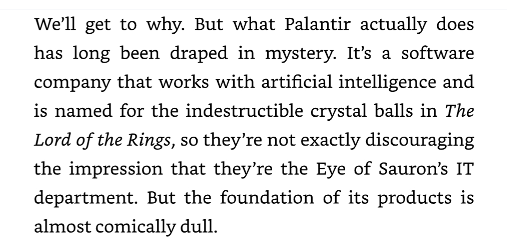
Tyrangiel, AI for Good: How Real People Are Using Artificial Intelligence to Fix Things That Matter (Simon & Schuster, 2026), ch. 3
Kate Taylor, “Chipotle Is Working With Palantir to Track Food Safety Risks,” WIRED, Sept. 16, 2026
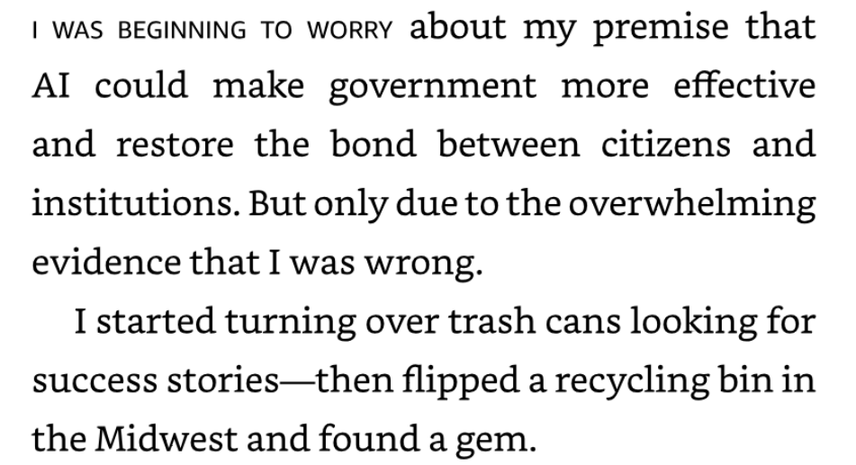
Tyrangiel, AI for Good: How Real People Are Using Artificial Intelligence to Fix Things That Matter (Simon & Schuster, 2026), ch. 3
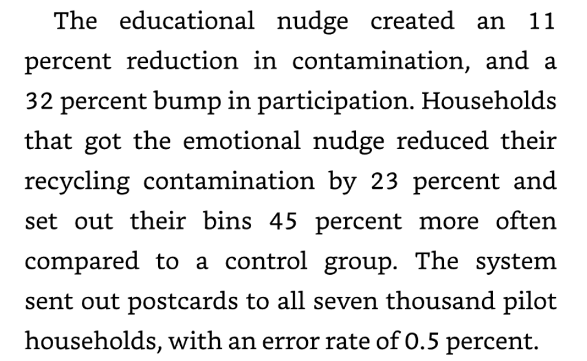
Tyrangiel, AI for Good: How Real People Are Using Artificial Intelligence to Fix Things That Matter (Simon & Schuster, 2026), ch. 3
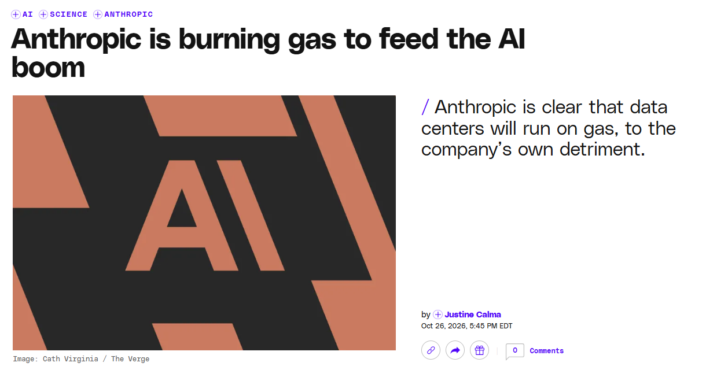
Justine Calma, “Anthropic is burning gas to feed the AI boom,” The Verge, Oct. 26, 2026
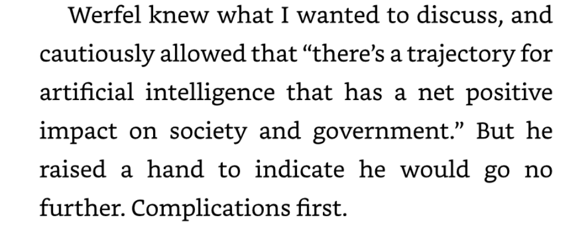
Tyrangiel, AI for Good: How Real People Are Using Artificial Intelligence to Fix Things That Matter (Simon & Schuster, 2026), ch. 3
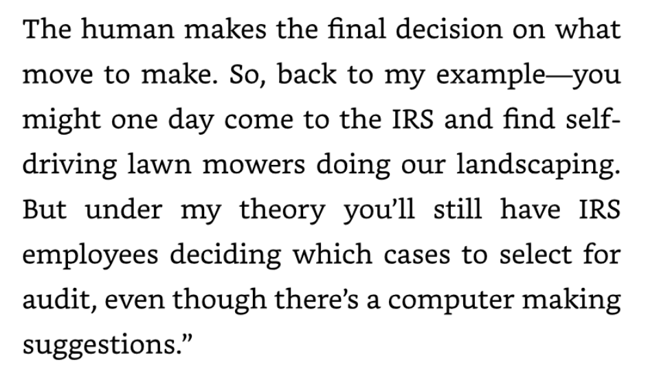
Tyrangiel, AI for Good: How Real People Are Using Artificial Intelligence to Fix Things That Matter (Simon & Schuster, 2026), ch. 3
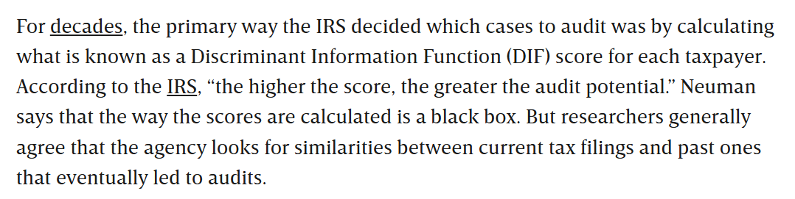
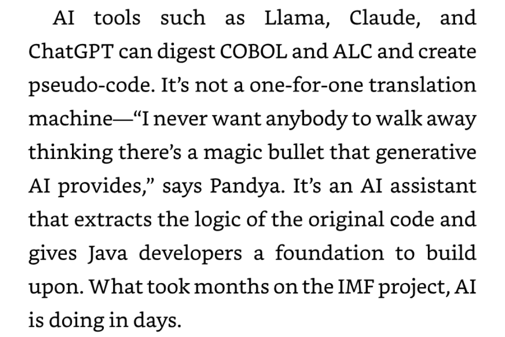
Tyrangiel, AI for Good: How Real People Are Using Artificial Intelligence to Fix Things That Matter (Simon & Schuster, 2026), ch. 3
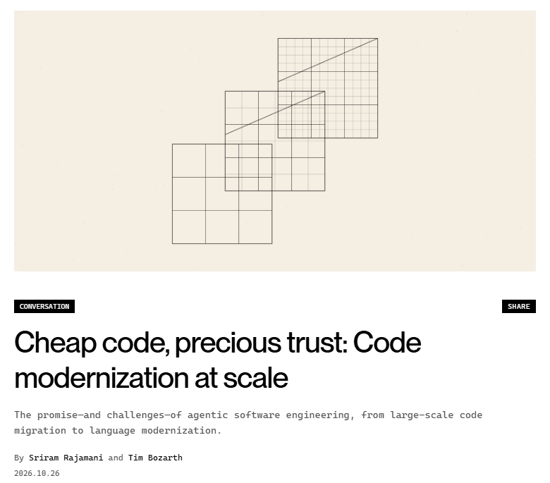
Rajamani and Bozarth, “Cheap code, precious trust,” Command Line (Microsoft), Oct. 26, 2026
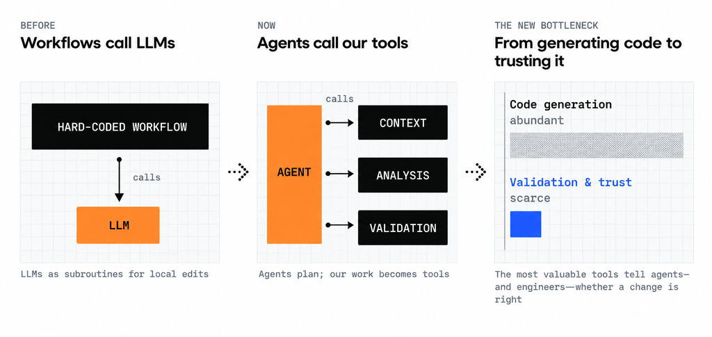
Rajamani and Bozarth, “Cheap code, precious trust,” Command Line (Microsoft), Oct. 26, 2026
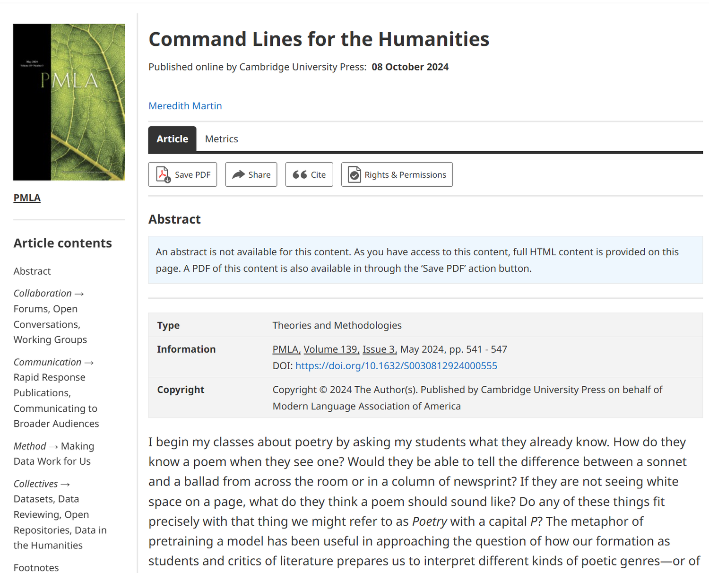
Martin, “Command Lines for the Humanities,” PMLA 139.3 (2024)
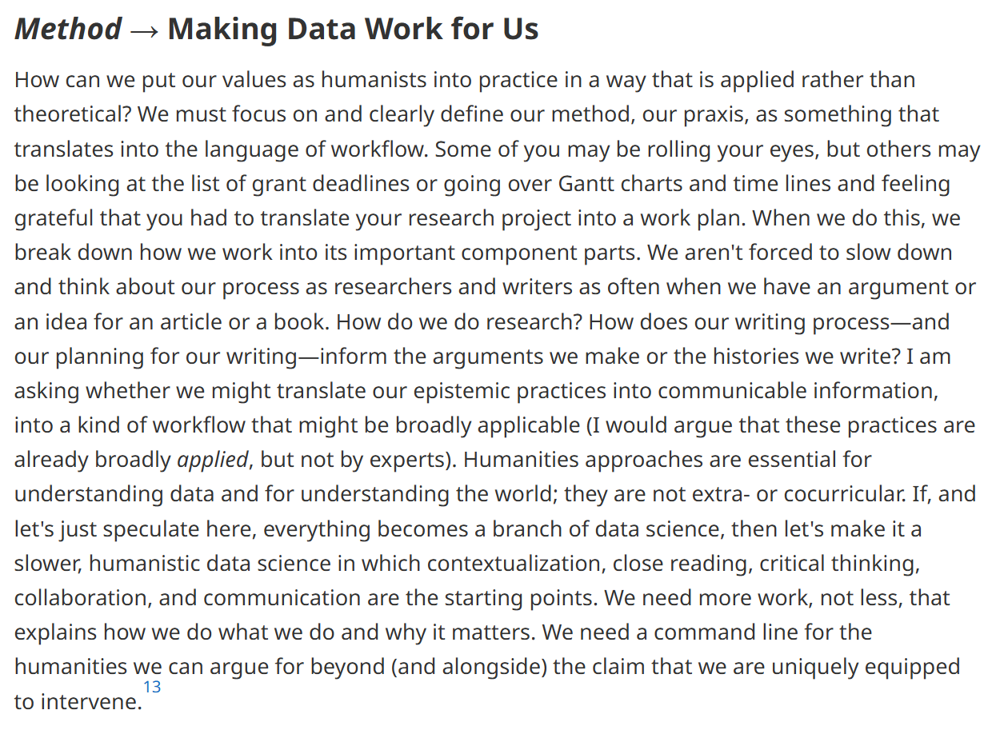
Martin, “Command Lines for the Humanities,” PMLA 139.3 (2024)
“Battle Drones is heavily vibe coded—I’ve reviewed almost none of the code, and it’s built in a language (TypeScript) that I’ve hardly used myself. I’ve playtested it quite a bit though, and it’s been through a large number of iterations since I started the project.”
Willison, “Battle Drones—a vibe coded RTS with audio-based multiplayer,” Oct. 20, 2026
> Let's start with a MVP design, ask me some questions
“This first version was barely a proof of concept, and it wasn’t any fun to play.”
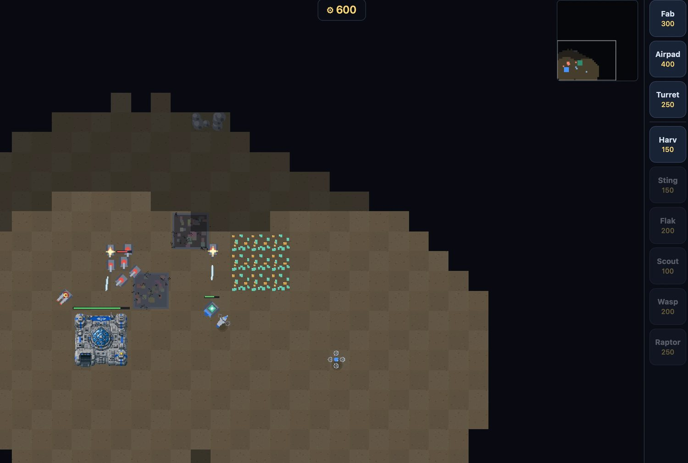
https://simonw.github.io/battledrones/v1/ · Willison, “Battle Drones”
> Massively improve this game. Make the graphics and gameplay better…
“This is starting to feel like a real game! It still wasn’t very fun to play though—I found myself getting bored pretty quickly.”
https://simonw.github.io/battledrones/v3/ · Willison, “Battle Drones”
> This game isn't fun enough yet. Make it a LOT more fun.
“This kicked off many hours of work. I started it in the evening and didn’t get a playable result back until late into the next morning.”
“…it ran over a thousand simulated playtest sessions, and used the results to rebalance the existing units, add new ones, and introduce new features.”
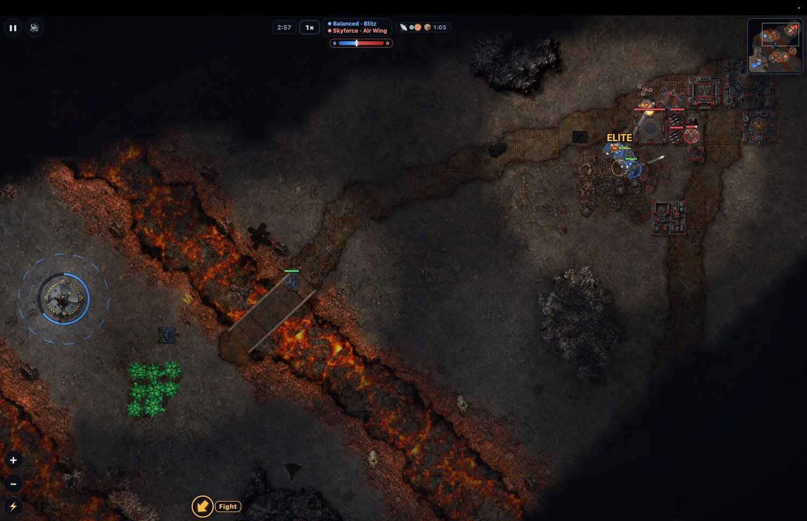
https://simonw.github.io/battledrones/v4/ · Willison, “Battle Drones”
> Port this game to three.js with 3D models for all of the buildings and vehicles and landscapes
“That was another overnight run.”
“The new 3D models were entirely constructed by Claude in TypeScript code.”
https://simonw.github.io/battledrones/v5/ · Willison, “Battle Drones”
“I was beginning to feel guilty at how little actual design input I had into the game—it really had been a case of me saying ‘make it more fun’ and ‘add visual polish’ for the past few releases.”
> First research and then critique this design. Only build after we have agreed on any modifications
https://simonw.github.io/battledrones/v9/ · Willison, “Battle Drones”
“I’m still not quite over the guilt of building software in this way. I don’t feel like I’ve earned the right to create something this good, in a field in which I have so little prior experience!”
“I’d love to see what someone with better taste than me and a driving passion to produce something truly exceptional could build!”
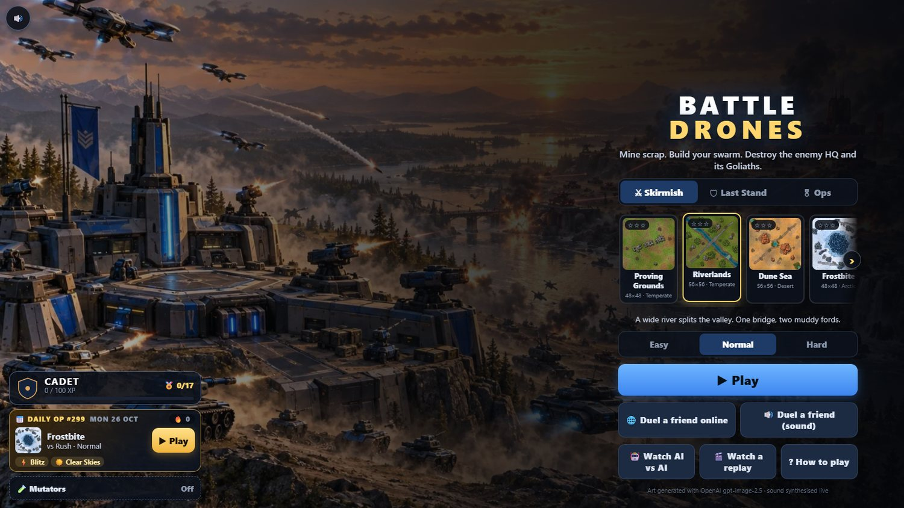
https://simonw.github.io/battledrones/ · Willison, “Battle Drones”